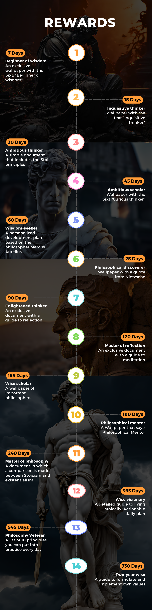

My Profile

Streak: 0 Days
Achieved Milestones:

Streak: 0 Days
Achieved Milestones:
Your streak represents the number of days you've listened to an audio file. For each day you listen, you continue to build your streak. If you miss a day, the streak resets.
In your profile, you'll see a streak count. Compare this count with the badge image to see which badge you've earned. Badges are awarded based on the length of your streak. For example, a 7-day streak will correspond to a wodden badge on this path.
If you reach a goal, you will be rewarded by us. Send a screenshot of your streak as proof to this email: Ecoming48@gmail.com | We will send you rewards.